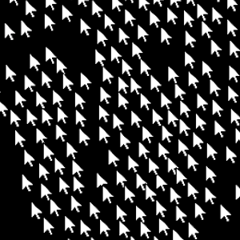

pixelfall - pixels below a certain brightness threshold will fall to
the bottom of the frame, pushing brighter pixels to the top.

boxsplit - a grid of boxes are laid over an image, and split into four
smaller boxes if there is a pixel below a certain brightness threshold within that box.
those boxes are then split again and again until the image is approximated.
fluidimg - a fluid simulation is initialized and assigned density values
in accordance with the brightness of the pixels of an image. the mouse can be used to push
the fluid around. density is still gradually added to encourage the simulation to continue
to resemble the image.
circleimg - the canvas is populated by circles, which can be added at
random positions or added manually with the mouse. the circles will not overlap and are
colored to be the average color of the pixels they represent.

cursorimg - the likeness of an image is approximated with cursors. the
cursors have two forces acting in them; one pushing them to follow the contours of an
image, and another pushing them apart to avoid clustering.